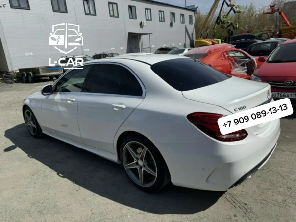

Останавливаем ржавчину и защищаем кузов от дальнейшего разрушения. Зачистка до металла, преобразователи, антикор и покраска.
Фотографии из нашего цеха. Больше проектов — в галерее работ и в группе ВКонтакте.



Ржавчина — главный враг кузова, и челябинский климат ей помогает: реагенты на дорогах зимой, перепады температур, влага и гравий ускоряют разрушение металла. Коррозия никогда не проходит сама: если её не остановить, через год-два небольшое пятно превращается в сквозную дыру. В «ГЕОМЕТРИИ КУЗОВА» на ул. Каслинской 1/1 мы удаляем коррозию по технологии: очищаем металл, обрабатываем защитными составами и только потом красим. Простая «замазка» поверх ржавчины не работает — мы делаем так, чтобы проблема не вернулась.
Чем раньше начать, тем дешевле ремонт. Обратитесь к нам, если заметили:
Отдельно стоит проверять скрытые полости: пороги, лонжероны, внутренние арки, днище. Там коррозия развивается незаметно, и обнаруживается уже на этапе разрушения металла. На дефектовке мы осматриваем эти зоны и предупреждаем о рисках.
Коррозия бывает поверхностной, подпленочной и структурной. Поверхностную можно удалить механически, подпленочную — только с полным снятием ЛКП в проблемной зоне, структурную лечат заменой участка металла. Мы используем комбинированный подход:
Цена зависит от площади поражения и стадии коррозии. Ориентируйтесь на базовые расценки, точную сумму назовём после осмотра:
| Работа | Цена |
|---|---|
| Удаление поверхностной коррозии (небольшой участок) | от 1 000 ₽ |
| Обработка арки или порога с покраской | от 4 500 ₽ |
| Антикоррозийная обработка скрытых полостей | от 3 000 ₽ |
| Ремонт крыла с коррозией и покраской | от 12 000 ₽ |
Срок — 1–2 дня. Если требуется замена фрагмента металла или ремонт арки, срок увеличивается до 2–3 дней.
Коррозия имеет свойство распространяться под краской, оставаясь внешне незаметной. Когда вы видите «пузырь», под ним уже поражён более широкий участок. Через сезон такой дефект требует уже не локальной зачистки, а замены панели или арки — а это совсем другие деньги. Мы регулярно видим автомобили, где кустарная «обработка» преобразователем без зачистки привела к тому, что ржавчина за год «съела» арку изнутри. Правильнее один раз сделать всё по технологии.
Мы останавливаем коррозию и защищаем кузов от дальнейшего разрушения, а после ремонта даём гарантию. Работаем с любыми марками: от Hyundai Solaris и Mazda 3 до Mercedes C180 — у всех этих автомобилей мы успешно устраняли коррозию задних крыльев и арок. Приезжайте на бесплатную дефектовку на ул. Каслинскую 1/1 или пришлите фото проблемной зоны. Звоните: +7 (922) 632-60-30 или +7 (351) 683-12-05. Ежедневно с 10:00 до 20:00.
Лучший ремонт — тот, который не понадобился. Мы советуем мыть автомобиль чаще зимой, чтобы смывать реагенты, не оставлять сколы без внимания и раз в 2–3 года обновлять антикоррозийную обработку скрытых полостей. Также полезно проверять дренажные отверстия в дверях и порогах — если они забиты, влага скапливается внутри и запускает коррозию. Эти простые привычки заметно продлевают жизнь кузову.
Присылаете фото повреждения — получаете предварительную оценку.
15 минутПроводим дефектовку, согласовываем работы и финальную стоимость.
30–60 минутВыполняем по этапам, отправляем фотоотчёт на связи.
1–2 дняПроверяете результат, подписываете акт, получаете гарантию.
30 минутПришлите фото повреждения — рассчитаем стоимость и сроки. Или позвоните: +7 (922) 632-60-30, +7 (351) 683-12-05.
Позвонить: +7 (922) 632-60-30 Оценить по фото